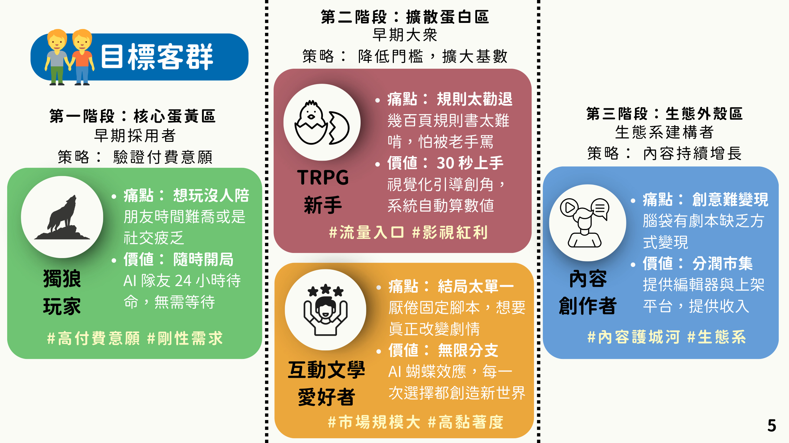
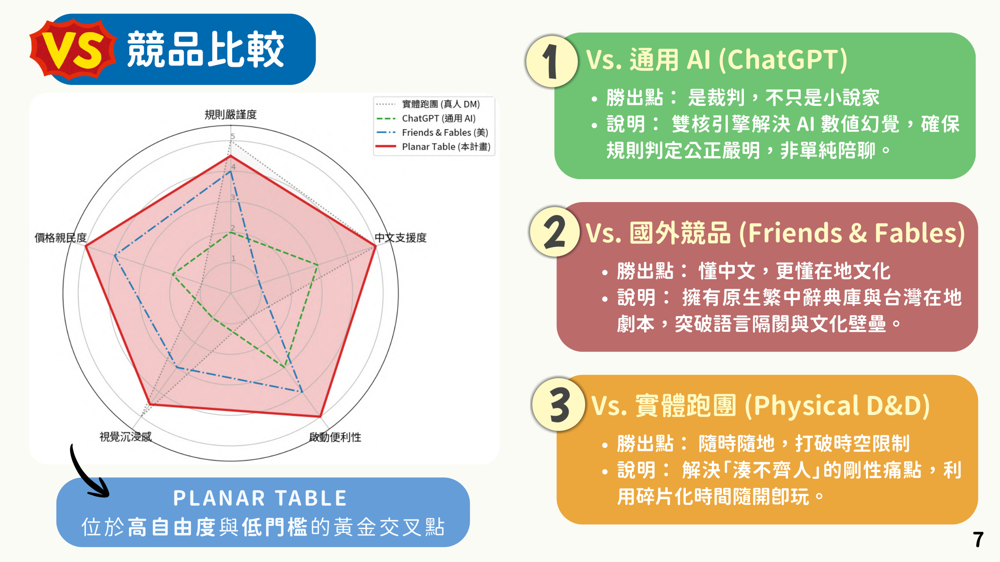

市場痛點 → 解決方案
流量轉換斷層D&D 規則複雜
30 秒無痛開局視覺化引導承接影視與遊戲流量。
供給端瓶頸真人 DM 培養成本高
AI 虛擬 DM24 小時在線，降低供給上限。
碎片時間斷裂上班族難以約長時段
單人冒險系統把零碎時間變成可玩的劇情進度。
內容在地化不足多數劇本偏西方奇幻
繁中在地內容以台灣文化題材建立差異化與文化輸出。
這頁把提案中最適合對外溝通的內容濃縮成官網語言：為什麼市場做不大、Planar Table 如何切入，以及第一階段如何驗證付費與成長。

這群玩家重視的是「可中斷、可持續、品質穩定」的娛樂。他們不是沒有興趣，而是沒有固定團與長時間。
對這群人來說，關鍵不是劇本深度，而是第一分鐘能不能進入狀況。官網與產品體驗都要先降低理解門檻。
互動文學愛好者不一定是桌遊玩家，但對「故事分支」與「選擇後果」非常有感，最適合突破小眾圈層。
當創作者可以在平台上販售劇本並分潤，Planar Table 就不只是工具，而是內容生態系。
提供每日有限對話與單一官方劇本，讓使用者先感受到產品價值。
解鎖無限 AI 對話、完整官方內容與私人劇本庫，是第一階段穩定經常性收入來源。
針對高耗能生成與功能型體驗加值，例如角色繪圖、復活角色或命運修正。
